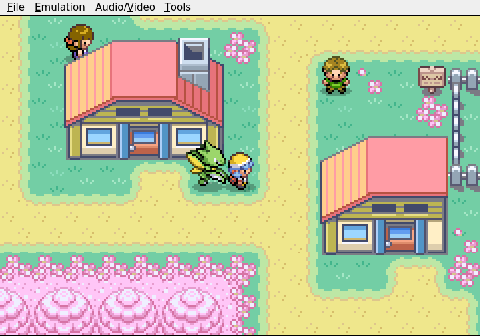

Gemini plays Pokemon Heart & Soul, Run 2
The Revolving Door
You can lead an AI to a Pokémon Center, but you can't make it heal.
After a long slog through Route 29's tall grass, Gemini finally reaches the Cherrygrove City Pokémon Center. This is the moment that matters. Viper the Scyther is beaten up, and the red-roofed building with the healing counter is right there.

Gemini issues the warp command. The doors slide open. It steps inside.

Then, instead of walking the three tiles north to Nurse Joy's counter, the AI's pathing logic tangles itself into a knot. It walks down. It bumps into a wall. It turns. It walks right back out the front door.

The whole visit lasts maybe two seconds. Gemini enters the Pokémon Center, performs a small confused loop near the entrance, and leaves without healing. Viper is still hurt. The tall grass around Cherrygrove is still full of wild Pokémon. And Gemini is wandering away from the one building that could have fixed everything, apparently satisfied that its work here is done.

You can lead an AI to a Pokémon Center, but you can't make it heal.